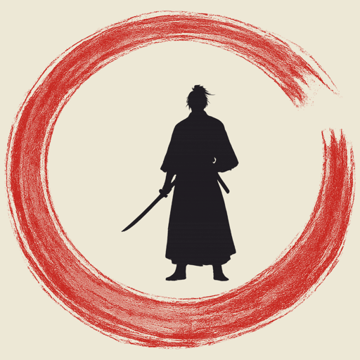

A sumi-e timing-action game distilled to a single motion: the iaido draw. Breathe, read the distance, and answer with one perfect cut — the way of a single, decisive flash.
🎨 In development — concept art shown below, not final gameplay.

Key art — in development
The World
🌸
Painted in sumi-e — ink wash and the beauty of empty space, with a single stroke of vermilion. Across the seasons — cherry blossoms, autumn leaves, snow, moonlight, mist and bamboo — silence holds, until the instant the ink bursts into a cut.
Sumi-e: ink and empty space
How to Play
⚔
One stroke is all you have. Drag across the screen to draw your blade through the targets at the perfect moment — no spamming, no flailing, just a single decisive line.
Read the distance — wait as a target closes into range.
Slash the red oni-fire with one stroke; line several up and cut them in a single sweep.
Spare the blue souls — slip your stroke past them, or lose the combo. Chase the gold for a true flash (perfect only).
Fill the breath gauge, then "settle" (totonou) — your senses sharpen and time seems to slow, the cut window widens, and you land a flurry of perfect flashes.
One stroke, one blade
Highlights
✨
Tap-perfect timing built on the iaido draw — a mechanic of its own
Sumi-e ink art with a single vermilion accent
A "breath / settle" focus mode where senses sharpen and time seems to slow
True-flash slow-motion replays, made to share
Seasonal stages, a dojo of stances and blades, and a yokai bestiary (planned)